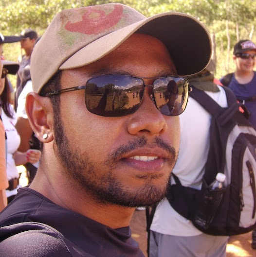

Sobre
O QA Night é um evento criado pelo grupo Teste de Software-PE, com o objetivo de compartilhar e adquirir conhecimentos e experiências. O primeiro encontro, sobre automação de testes de software, acontecerá em 19 de fevereiro de 2014, no escritório da ThoughtWorks em Recife (Empresarial Isaac Newton, 12º andar).
Localização
Av. Governador Agamenon Magalhães, 4779. Recife, PE
Palestrantes
-
19h15 Cucumber
Taíse Dias @taisedias
Taíse é formada em Ciência da Computação pela UFPE, e trabalha com criação de software desde 2006, focando em qualidade e automação de testes. Atualmente, é consultora em Qualidade de Software na ThoughtWorks.
-

19h45 Testes Funcionais com Selenium e Java
Leandro dos Anjos leoanjossantos@gmail.com
Leandro possui formação em Análise e Desenvolvimento de Software e trabalha com testes de software desde 2005. Atualmente, trabalha como Analista de Testes na Pitang desde 2007.
-
20h30 Testes Funcionais com Watir e Ruby
Rafael Lima rafalima07@gmail.com
Rafael é Bacharel em Ciências da Computação, trabalha na área de TI desde 2003: programou em Delphi e PHP e nos últimos 5 anos tem focado em automação de testes. Atualmente é consultor em Qualidade de Software na ThoughtWorks.
Agenda
| Time | Slot | Description |
|---|---|---|
| 19h00 | Check-in | - |
| 19h15 | Cucumber ThoughtWorks | Introdução sobre Cucumber, uma ferramenta baseada em Behavior Driven Development (BDD). |
| 19h45 | Testes Funcionais com Selenium e Java Pitang Consultoria e Sistemas | Automação de testes funcionais utilizando o Selenium como framework de automação e Java como liguagem de programação. |
| 20h30 | Testes Funcionais com Watir e Ruby ThoughtWorks | Automação de testes funcionais utilizando o Watir como framework de automação e Ruby como liguagem de programação. |